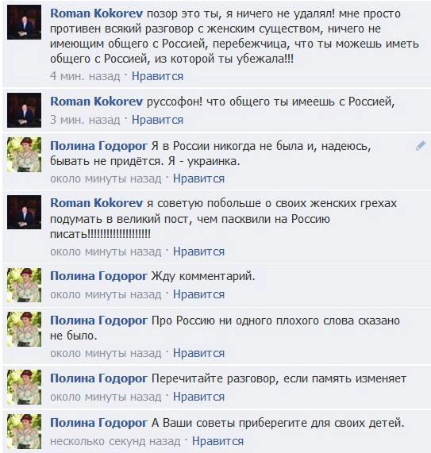

«Представитель РФ в Совете Европы», обещавший вернуть России Финляндию и Аляску, оказался стажером
Сегодня ряд СМИ обнародовали переписку жительницы Страсбурга (во всяком случае, так указано на ее странице), украинки Полины Годорог с Романом Кокоревым, которого все восприняли как представителя России в Совете Европы (по другим версиям — в Парламентской Асамблее Совета Европы или даже Европарламенте).
«Дорогие украинцы и трезвомыслящие россияне!!!Сегодня имела честь пообщаться с представителем России в Европарламенте.Разговор был о ситуации в Крыму.Не могу этим с Вами не поделиться.Пожалуйста, передайте дальше, чтобы все увидели.Внимание, неприличные выражения», — написала Годорог, подкрепив свои слова множеством скриншотов своего общения с Кокоревым.
Исходя из скриншотов, во время переписки Кокорев действительно «предвещал» скорое присоединение к России всей бывшей территории СССР, а также Финляндии, Польши и даже Аляски.
Кроме того, Кокорев употреблял множество оскорблений, например заявил, что ему «противен всякий разговор с женским существом, ничего не имеющим общего с Россией», из которой она убежала.Это обвинение выглядит особенно странно на фоне того, что Годорог — украинка, а сам Кокорев, судя по записям в его соцсетях, уже долгое время живет во Франции.
Также он написал, что удел женщины «носки стирать мужикам да ноги раздвигать», а не вмешиваться в политику.
Больше скриншотов разговора можно посмотреть на странице Годорог.
Однако СМИ поспешили перепостить информацию о вопиющем поведении «представителя России в Европе», не проверив, является ли он на самом деле таковым.Они, как и Полина Годорог, были введены в заблуждение тщеславием самого Кокорева: похоже, ему очень хотелось, чтобы его так воспринимали.Так, на его странице в Facebook написано, что он работает в Совете Европы, Институте законодательства и сравнительного правоведения при правительстве РФ, а также Госдуме и Федеральном собрании Российской федерации.
Кроме того, утверждает Кокорев, ранее он трудился в Администрации президента России и Дипломатической академии российского МИДа.
Это еще не все.На своей странице в соцсети профессионалов LinkedIn, где он именует себя «доктором» (Dr.), кроме вышеуказанных титулов Кокорев назвал себя юрисконсультом при Парламентской Ассамблее Совета Европы.
Но Кокорев не является представителем России ни в одном из европейских политических органов.Так, его имени нет на сайте ПАСЕ в перечне представителей всех стран, также на этом ресурсе его не находит поиск.
На сайте Совета Европы и Европарламента о таком также не слышали.
Так кто же такой Роман Кокорев и какое отношение он имеет к Европе?Ответ на это можно узнать на сайте Института законодательства и сравнительного правоведения при правительстве РФ.Там он упоминается среди сотрудников отдела международного публичного права:
Кокорев Роман Сергеевич – старший научный сотрудник, кандидат юридических наук, магистр права Амстердамского университета.С 1999 г. — член Российской Ассоциации Международного Права.В 2008 г. проходил стажировку в Администрации Президента России (Управление Президента России по внешней политике).В 2011 г. проходил стажировку в Совете Европы (Директорат Юридического Советника и Международного Публичного Права).
Таким образом, Кокорев не является официальным представителем России в какой-либо государственной структуре Европы.Но тем не менее, его послужной список, титулы и образование все же крайне плохо сочетаются с вопиющими выражениями, которые он употребил при общении в Фейсбуке, а также с предсказаниями будущего мирового господства России.
Posted On: 2014-03-18T21:00:00

Content Date: 2014-03-18
Download Date: 2021-07-16
Document ID: L0C04F9OM